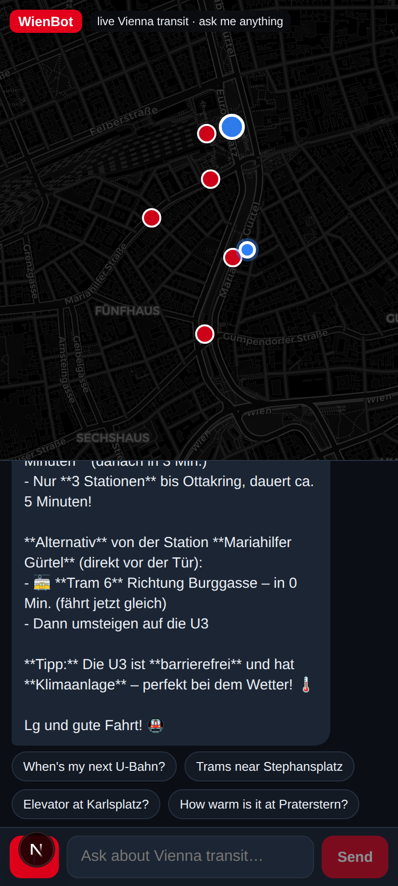

hey, bin im ibis
hey, bin im ibis
mag nach ottakring, wie komm ich da hin?
lg
Franz
AI SEO
Super, du bist am **Ibis Mariahilf** (Gürtel)! Die beste Route nach Ottakring:
**🚶 Zu Fuß zum Westbahnhof** (ca. 5 min) → **U3 Richtung Ottakring** (Endstation, direkt durch!)
Alternativ: **Bim 6** oder **18** Richtung *Burggasse-Stadthalle* (kommt in **1 min**), dann zur **U6** und eine Station Richtung Siebenhirten, aber das ist umständlicher.
Soll ich dir die **U3-Abfahrten am Westbahnhof** zeigen? 😊
